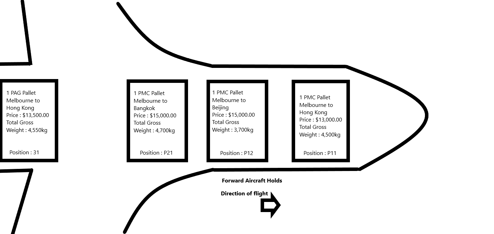

Projet Idea
Overview
My project idea is to create an airline cargo system that combines a reservation system, and aircraft load planning systems, which means that air cargo can be processed from start to finish at the airport with one system. This would be as if we merged a cargo reservation system such as Cargo Spot with ALPS (Advanced Load Planning System). So through this program, the main information that needs to be highlighted to the user are the total weights of the cargo already booked, the total price of all cargo to be eventually loaded, how many cargo positions are still available to be sold, the balance of the aircraft including the trim indicator, and the passenger load factor of each flight. The program can be further used also for the departure of the aircraft. Once all the final information has been received and checked in the program, the program can produce the required documents which staff need to file and keep for at least five years after the day of departure.
Motivation
The main reason why there is a need for this program, is because often airline reservation staff in the cargo department need a better overview of a particular flight up to a week in advance. In most load planning systems, the flights are only entered into the live system 48 hours before departure. Reservation staff need to be able to identify more precisely how much space is left on a flight for sale, and they also need to be made aware of factors that may cause conflict with cargo already booked on a particular flight. Currently these two systems have always been kept separate and do not communicate with each other. That being a pure reservation system, and an aircraft load planning system. This causes a problem for operational staff processing the departure of aircraft. Often if there are dangerous goods on a flight that cannot be loaded next to other types of different dangerous goods, one of the shipments needs to be offloaded, which then causes more work for operational staff, and also potentially a loss in revenue because space on the aircraft is going unutilized. By having a system that checks this information earlier, will lead to less problems just before departure.
If there was a system that allowed us to easily identify days before departure things like: how much money would be being made from one particular flight, plus being able to see if an aircraft will be in balance or not (trim) based on the current reservations, plus being able to see conflicts of different cargo, then there would be less cargo being offloaded from flights which will ensure happier customers and will even increase revenue as space on aircraft is not being wasted. This system will also be more user friendly and make many tasks for aircraft dispatchers much easier, by having a full overview of all cargo details available to them in just one click.
Description
From the home screen, the user will need to choose a particular flight by selecting the flight number and date. The aircraft types will be pre-loaded into the program, however users will need to have the option and permission to be able to change the aircraft type in case of an aircraft change at the last minute. Once the desired flight and date are selected, the user will be taken to a screen that shows a certain number of rectangles half way down the page. The number of rectangles will represent the number of positions available to load cargo pallets into the aircraft. For example, an Airbus 330-300 can carry 6 PMC cargo pallets and 2 PAG cargo pallets. Therefore a total of eight rectangles will need to be displayed on the screen.
Then below the rectangles, the user can see the cargo booking list for the flight they are wanting to investigate or process. Each shipment will be listed separately and show how much space is required plus the total net weight, and the total gross amount that will be paid to the airline for transporting the cargo. The user can then drag and drop each booking onto a rectangle to show how much space is being taken up on the cargo pallet (PMC or PAG). Once all the current bookings have been positioned onto rectangles representing pallets, the user can then move the rectangles as an entire unit onto the aircraft map on the top half of the screen.
Then once all rectangles have been positioned on the aircraft map, the system will be able to calculate the trim or balance of the aircraft and show if the tail or the nose of the aircraft is too heavy or not. If the aircraft is out of trim and needs to be rebalanced, the user can simply click on the rectangles that have already been positioned on the aircraft map and drag them back down to the lower section of the screen to be repositioned later. The user can then simply drag the rectangles representing the different cargo pallets around on the aircraft map until all pallets are ‘digitally’ loaded, and a solution has been found and the aircraft is in balance.
The information that will need to be presented or shown to the user directly on the digital pallets are the estimated gross weight, the Air Way Bill (AWB) Number ( which is a ticket or reference number for cargo), destination, any dangerous goods information that may be found in the shipment, and the pallets priority number or code.
Once the flight is checked and everything is in order, the staff member has a clearer picture of the overall status of the flight. They can then decide if they sell cargo at cheaper rates simply to fill space because the required profit margin has already been reached, or if the profit margin has not been reached and the cargo should only be sold at more expensive priority rates. The staff member at this point can also clearly identify if more dangerous goods can be accepted and what class they can be, as to not cause a conflict. The staff member can also most importantly see how much free weight is available before the aircraft reaches its maximum take off weight.
The main obstacles with this program are that figures or information such as passenger loads and weights, or weather conditions (which greatly effect how much fuel an aircraft needs), will vary. This means that the information provided in this system can only be used as a guide to the status of a particular flight at that exact point in time.
Tools and Technologies
This program can be web based, therefore as far as hardware is concerned, all modern day computers should be able to process this program. As this program could also be used by staff working out at the aircraft, the program should also be able to be run on a tablet and have all functions performing and displaying correctly on these devices. Otherwise the main use of this program or app would be completed at a work station by using a computer with a Microsoft Windows, macOS, or Linux operating system.
With the help of bar code readers or QR (Quick Response) scanners, staff could hold a scanner over a code located on the tag of a pallet. This scanner could also be the camera on a tablet device as many devices these days have programs built in so that the camera is able to read the code. Once the code from the pallet is scanned, the information regarding the cargo pallet will automatically be displayed as an output on the users hand held device. Then all that is needed before the pallet is loaded, is for the staff member loading the aircraft to compare the information from what is on the pallet tag and what is on his or her device. If all the information matches, the pallet can be loaded. And by pressing the ‘load’ button on the device, the program will then show this pallet as being physically loaded. So the use of a tablet with a camera or scanning device would be ideal to take this program further.
Skills required
Having a sound knowledge of programming languages or code such a Java would be necessary to create this program. The program itself requires the computer to do a lot of calculations, and allow users to interact with it. The programmer also needs to know html so that the program is set out or designed neatly and interestingly. This also means that the person designing the program should be somewhat creative. We want the program to be very user friendly and simple to use. Therefore, a good understanding of how to make all items or options easy to identify or locate, is very important.
Outcome
The outcome of this program is simple in the fact that it alerts staff to key factors that need to be focused on to ensure a flight is reaching its maximum profitability. Another result of having a program like this is that it will create less work for dispatching staff that are already under time pressure to get a large amount of work or tasks done in a small period of time. It will also eliminate more human errors that could be made as the checks would become automated.